What if the centers need to be contained in the square, but the rest of the circle need not be? Again we ask for the smallest square that works.
n=1
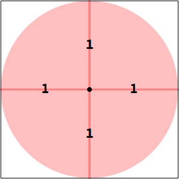
s = 2
| n=2
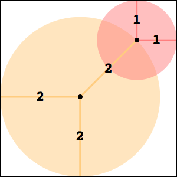
s = 3 + √2 = 4.4142+
| n=3
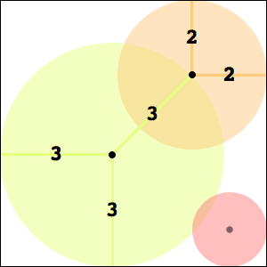
s = 5 + 3/√2 = 7.1213+
|
n=4
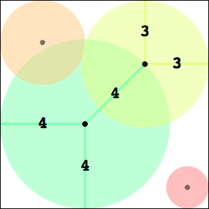
s = 7 + 2 √2 = 9.8284+
| n=5
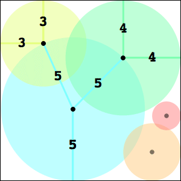
s = 12.5604+
| n=6

s = 15.4695+
|
n=7
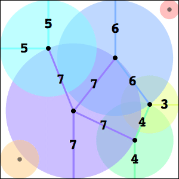
s = 18.4994+
| n=8
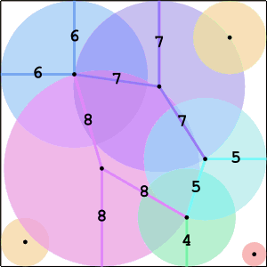
s = 21.6882+ (Joe DeVincentis)
| n=9
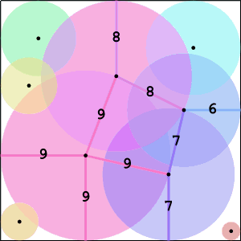
s = 25.3951+ (Maurizio Morandi)
|
n=10
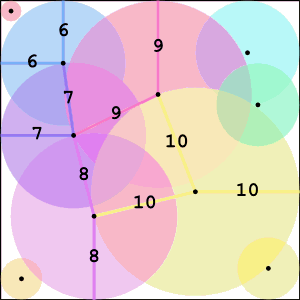
s = 28.6835+ (Joe DeVincentis)
| n=11
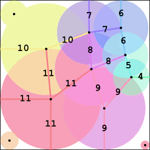
s = 32.5383+ (Joe DeVincentis)
| n=12
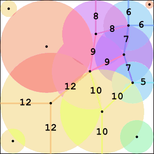
s = 36.4636+ (Joe DeVincentis)
|
n=13
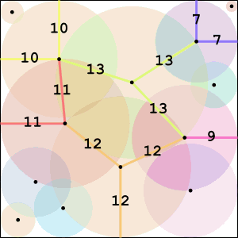
s = 40.3575+ (Joe DeVincentis)
| n=14
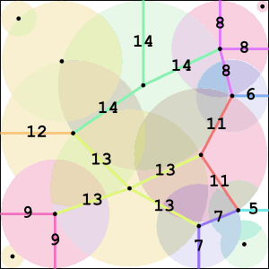
s = 44.2073+ (Joe DeVincentis)
| n=15
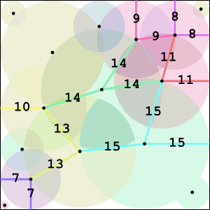
s = 48.2039+ (Joe DeVincentis)
|
n=2
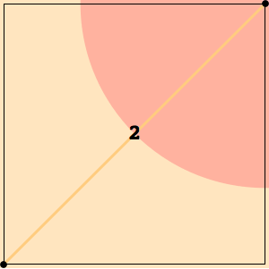
s = √2 = 1.4142+
| n=3
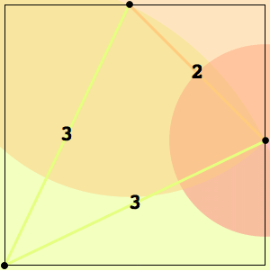
s = 2 + 1/√2 = 2.7070+
| n=4
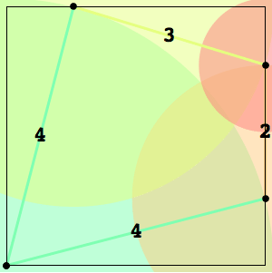
s = 3.8724+
|
n=5
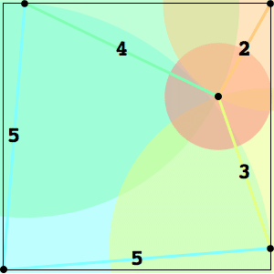
s = 4.9836+
| n=6
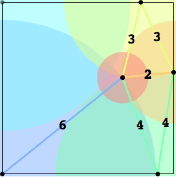
s = 6.6691+
| n=7
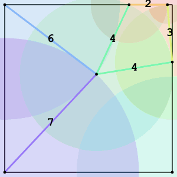
s = 8.7329+ (Joe DeVincentis)
|
n=8
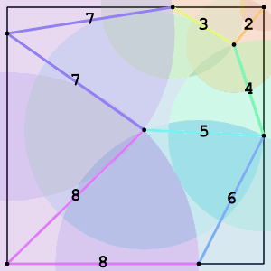
s = 10.7169+ (Joe DeVincentis)
| n=9
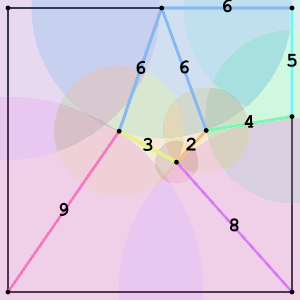
s = 13.0749+ (Joe DeVincentis)
| n=10
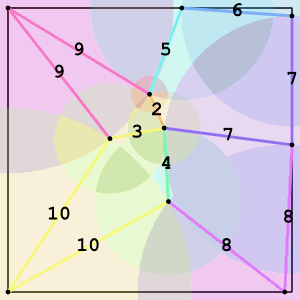
s = 15.4216+ (Joe DeVincentis)
|
n=11
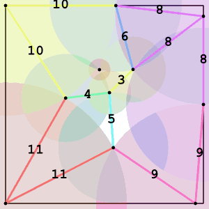
s = 17.9409+ (Joe DeVincentis)
| n=12
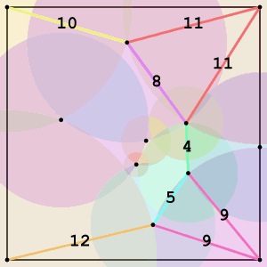
s = 20.2186+ (Joe DeVincentis)
| n=13
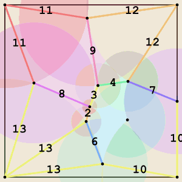
s = 22.7292+ (Joe DeVincentis)
|
n=14
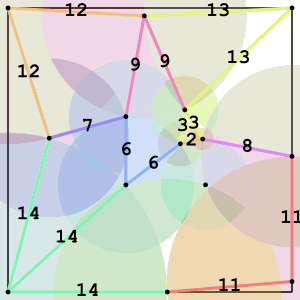
s = 24.9614+ (Joe DeVincentis)
| n=15
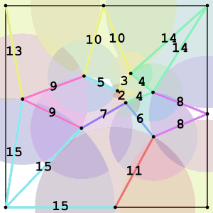
s = 27.6147+ (Joe DeVincentis)
|